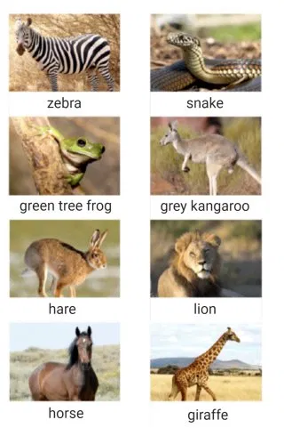
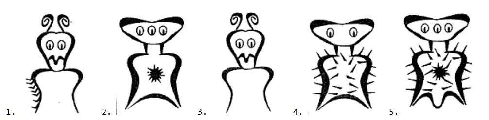
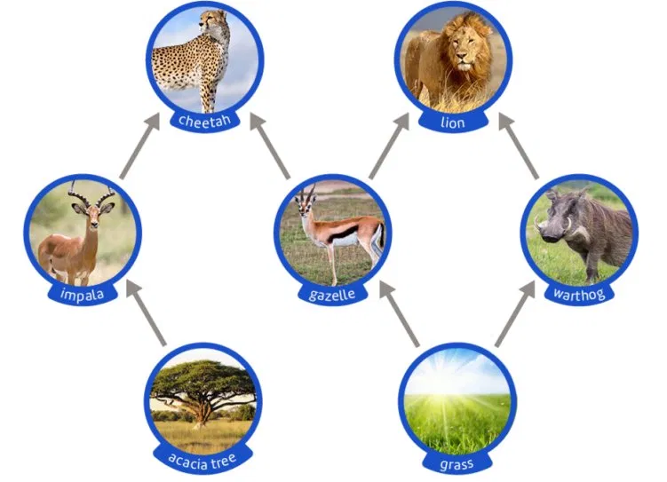
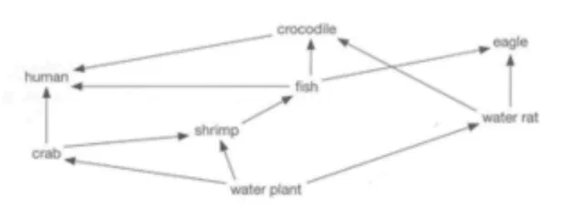

| Section | Topic | MC+T/F | SR (self) | Total |
|---|---|---|---|---|
| LG1 | Classification | — | — | — / 23 |
| LG2 | Food Webs and Ecosystems | — | — | — / 20 |
| TOTAL | — | — | — / 43 | |
Which is the correct order of the Linnaean hierarchy from broadest to most specific?
Which of the following is written correctly using binomial nomenclature?
A dichotomous key works by:
Why do scientists use a universal classification system?

animalsAn animal has legs, does not have a very long neck, and does not have stripes. Use the dichotomous key below to identify which animal is being described.

alien creaturesA creature does not have antennae, has spikes covering its body, and has a star shape on its body. Use the dichotomous key below to identify which creature is being described.
A scientific name consists of an organism's genus and species.
The Linnaean classification system has remained unchanged since it was first developed.
Organisms in the same genus are more closely related than organisms in the same kingdom.
Common names for organisms are used in scientific classification.
Each step in a dichotomous key always presents exactly two choices.
List the seven levels of the Linnaean classification hierarchy in order from broadest to most specific.2 marks
What is binomial nomenclature, and why is it used instead of common names?2 marks
Give one reason why biological classification systems have changed over time.2 marks
Using the animal images, create a simple dichotomous key with at least three steps that could be used to identify the snake, zebra, green tree frog, and grey kangaroo.4 marks
Two organisms share the same genus but different species. What does this tell you about how closely related they are?2 marks
Which organism is always found at the start of a food chain?
In the food chain: Grass → Grasshopper → Frog → Snake, what is the frog?
What does a food web show that a single food chain does not?
An organism that only eats plants is called a:

food web savannaUsing the savanna food web shown, if the population of gazelles suddenly declined, which organism would most likely be directly affected?
Arrows in a food chain point in the direction of energy flow.
A food web contains only one food chain.
Removing one species from a food web can affect many other species.
Producers obtain energy by consuming other organisms.
A tertiary consumer is always a herbivore.
What is the difference between a food chain and a food web?2 marks
Name the three roles an organism can occupy in a food chain.2 marks

food web aquaticUsing the aquatic food web shown, write one complete food chain containing at least three organisms. Show the direction of energy flow using arrows.2 marks
Explain what would happen to the rest of the food web if all producers were removed.2 marks
In a food chain, what does the arrow represent?2 marks
Scroll through to review your answers and self-mark your short response questions.